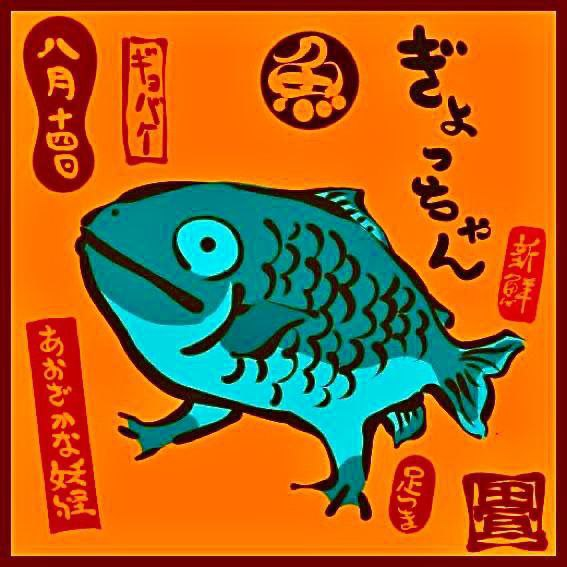

YOSHIKI LOGOS
Главная
Обо мне
Работы
Я в тгшке
Главная
Обо мне
Работы
Я в тгшке
Занимаюсь созданием логотипов, аватарок и дизайнов для любых нужд. На этом сайте можно посмотреть все мои работы!
Йошики Петрикор
Дизайнер логотипов и аватарок
Я в тгшке
Немножко обо мне
Моё имя Настя, и я дизайнер интересных логотипов и многого чего другого! занимаюсь таким около 3 месяцев, — но опыт уже в этом есть
Я в тгшке

Дают - бери, не дают - отбери!
Мои работы
Здесь вы можете увидеть мои работы, которые я сделала за все это время